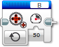
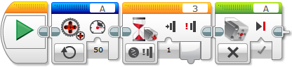

					<table cellpadding="0" cellspacing="0" border="0"><tbody><tr><td>
	
						<h1>未调整电机模块<a name="top"></a></h1>
		<div id="block_1393" class="block blockHeader">
				<table cellspacing="0" cellpadding="0" border="0">
			<tbody><tr>
				<td valign="top" class="image"></td>
				<td valign="top" class="description"><div class="text-wrapper">未调整电机模块控制中型电机和大型电机。可以开启电机并控制其功率级别。</div></td>
			</tr>
		</tbody></table>
			</div>
	<div id="block_1394" class="block blockChaptor">
		<div class="title">选择电机端口</div>
		<div class="description"><br>
<br>
 端口选择器<br>
 输入<br>
<br>
使用模块顶部的端口选择器可选择希望未调整电机模块控制的电机（A、B、C 或 D）。</div>
	</div>
	<div id="block_1395" class="block blockChaptor">
		<div class="title"><a name="Modes" style="position:relative; top:-10px;"></a>模式</div>
		<div class="description"></div>
	</div>
	<div id="block_1396" class="block blockMode">
		<div class="title"><a name="Mode_UnregulatedMotor" style="position:relative; top:-10px;"></a>未调整电机</div>
		<div class="description">和常规中型电机模块和大型电机模块未不同，未调整电机模块不包括自动电机控制。这表示不会包括任何针对电机功率的自动调整。指定“功率”<a href="./index.html?id=UnregulatedMotor#Inputs">输入</a>是用于控制电机的输入。 <br>
<br>
可以使用“功率”输入控制电机的速度和方向。电机会一直运行，直至由程序后面部分中的中型电机模块或大型电机模块停止或更改，或是直至程序结束。<br>
<br>
使用的<a href="./index.html?id=UnregulatedMotor#Inputs">输入</a>：功率</div>
	</div>
	<div id="block_1402" class="block blockTip">
		<div class="title">提示和技巧</div>
		<div class="boxContent">
			<div class="description">功率控制将补偿电机遭遇的任何阻力或空转。功率控制还会在可能时尝试补偿电池电量。</div>
				</div>
	</div>
	<div id="block_1405" class="block blockExample">
		<div class="title">示例</div>
		<div class="image"></div>
		<div class="description">在此程序中，电机会以 50% 的功率级别一直运行，直到按压了触动传感器，然后它会停止。</div>
	</div>
	<div id="block_1397" class="block blockChaptor">
		<div class="title"><a name="Inputs" style="position:relative; top:-10px;"></a>输入 <a name="Parameters" style="position:relative; top:-10px;"></a></div>
		<div class="description">未调整电机模块的输入设置电机的功率级别。可以将输入值直接输入到模块中。或者，可以通过数据线从其他编程模块的输出提供值。</div>
	</div>
	<div id="block_1398" class="block blockTable ">
		<table class="blockTable">
		

			<tbody><tr>
<th>输入</th><th>类型</th><th>允许的值</th><th>备注</th>			</tr>
<tr><td>功率 <a name="Power" style="position:relative; top:-10px;"></a></td><td>数字</td><td>-100 至 100</td><td>电机功率级别</td></tr>		</tbody></table>
	</div>
		
	
	
			<div id="quick">
				<div class="header"><a href="./index.html?id=UnregulatedMotor#header">未调整电机</a></div>
					<div class="quickText">快速链接</div>
					
					<ul>
	<li><a href="./index.html?id=UnregulatedMotor#Modes">模式</a></li><li><a href="./index.html?id=UnregulatedMotor#Inputs">输入</a></li>					</ul>
			</div>
	
	</td></tr></tbody></table>